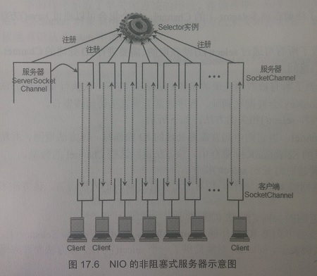

学习本章发现：Java Socket有个非常悲催的事实就是，当通讯双方建立连接后，如果一方意外断开了连接（比如程序意外终止或者调用了socket.close()方法），另一方是不知道的，可以继续发送消息，而不会产生任何异常。读取操作会产生异常，但是它是阻塞的。 所以，如果只是发送消息的话，是没办法知道对方是否已经断开了连接的(可以说是完全不知情，因为此时正常的这一方的socket对象的状态不会发生任何变化) 所以，在进行Java Socket编程时，通讯双方必须各起一个单独的线程用来做数据读取处理，这个线程可以判断对方是否已经断开了连接
本章将主要介绍Java网络通讯的支持，通过这些网络支持类，Java可以非常方便的访问互联网上的HTTP、FTP等服务，并可以直接获取互联网上的资源
Java为网络支持提供了java.net包
java.net包下的InetAddress类表示IP地址，它有两个子类：Inet4Address和Inet6Address，分别代表IPv4和IPv6地址
一张图看懂Java NIO的SocketChannel实现的Socket应用
